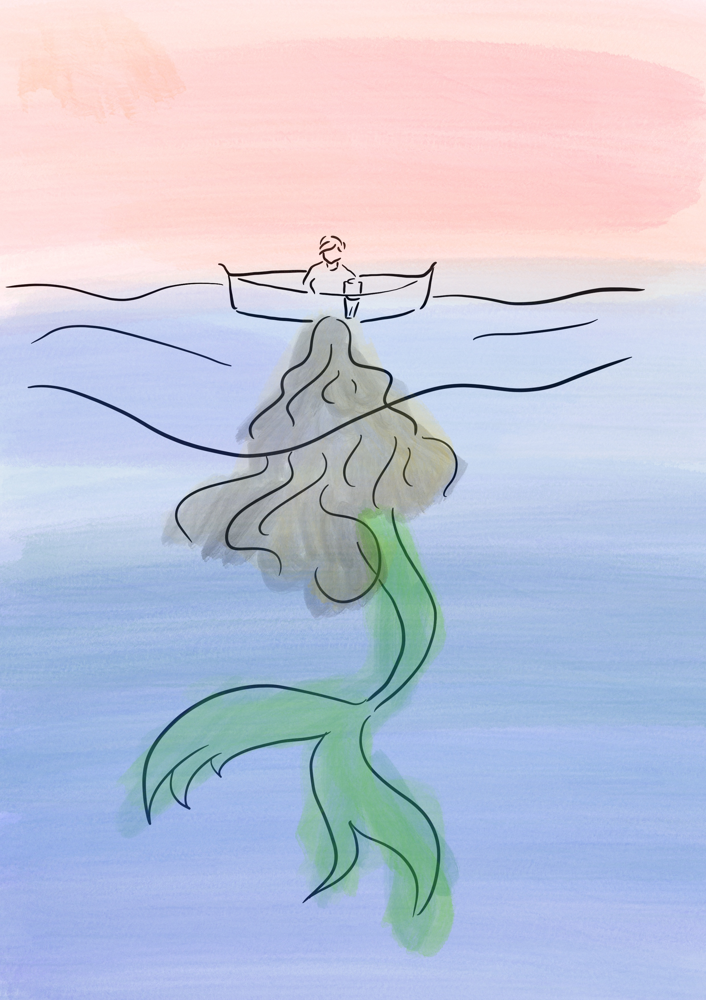

Iara: a lenda
Origem da lenda
O mito de Iara tem origem nas tradições orais dos povos indígenas da Amazônia, que já contavam suas histórias muito antes da chegada dos colonizadores europeus. O nome “Iara” deriva do Tupi-Guarani “y-îara”, que significa “senhora das águas”, refletindo a forte ligação entre a lenda e a visão indígena de mundo, onde a natureza é viva e espiritual por essência.
Acredita-se que, originalmente, Iara era uma guerreira indígena muito habilidosa, invejada por seus irmãos. Para se proteger, ela os matou em legítima defesa e foi punida por seu pai, o pajé da tribo, que a lançou em um rio. Os peixes a salvaram, e ela se transformou na sereia encantadora que conhecemos hoje.
Com o tempo, o mito foi ganhando novas camadas por meio do contato entre culturas. Influências europeias,especialmente de lendas sobre sereias, foram incorporadas à figura de Iara, tornando-a ainda mais complexa e simbólica. Assim, ela passou a ser vista como uma entidade ambígua: ao mesmo tempo encantadora e perigosa
Embora suas raízes estejam na região amazônica, a história de Iara se espalhou por todo o país, ganhando diferentes versões e interpretações. No Norte, onde rios e florestas dominam a paisagem, sua presença é especialmente marcante. A tradição oral foi essencial para manter a lenda viva, sendo transmitida de geração em geração como parte do patrimônio cultural brasileiro.

Imagem autoral criada para aula DSG1863